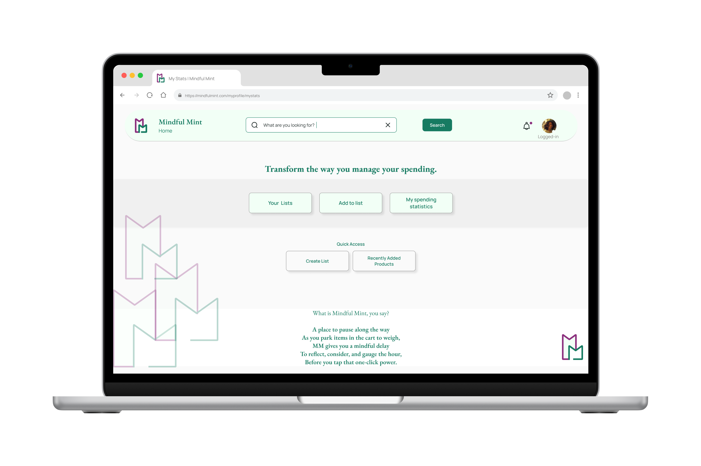

About Me
Grad Student (MS in Human Computer Interaction) at DePual University, Chicago
I believe the better we understand people and their contextual surroundings, the more meaningful and effective our solutions become. In the world of UX, I see people as subjects, with their relationships—to objects, others, and the universe—forming the context for any challenge.
My curiosity is driven by an innate desire to explore the "whys" and "hows" behind people's actions and behaviors. To me, learning—even when it seems unrelated—shapes a holistic foundation, nurturing intuitions and ultimately improving the ability to design for user needs and experiences.
